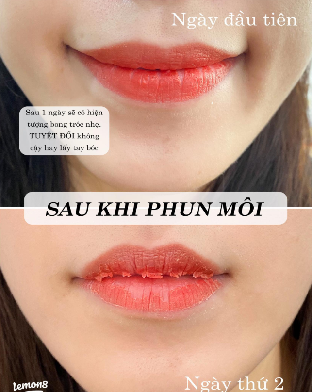

Kiến thức làm đẹp tại nhà ELLY

GIẢI ĐÁP MỌI THẮC MẮC
Nên làm môi hay làm mày trước nếu chưa biết bắt đầu từ đâu?

GIẢI ĐÁP MỌI THẮC MẮC
Cần chuẩn bị gì trước khi phun xăm mày môi tại nhà?

GIẢI ĐÁP MỌI THẮC MẮC
Khách trung niên nên chọn màu môi và dáng mày thế nào?

GIẢI ĐÁP MỌI THẮC MẮC
Làm mày môi có bị già không?

GIẢI ĐÁP MỌI THẮC MẮC
Làm sao để màu môi bền lâu và không bị khô xỉn?

GIẢI ĐÁP MỌI THẮC MẮC
Khi nào cần dặm lại môi hoặc chân mày?

GIẢI ĐÁP MỌI THẮC MẮC
Màu môi sau phun bao lâu thì ổn định?

GIẢI ĐÁP MỌI THẮC MẮC
Tư vấn trước khi phun xăm cần hỏi những gì?

GIẢI ĐÁP MỌI THẮC MẮC
Phun xăm tại nhà có an toàn và tiện không?

GIẢI ĐÁP MỌI THẮC MẮC
Mắt nhạt có nên phun mí mở tròng không?

GIẢI ĐÁP MỌI THẮC MẮC
Chăm sóc chân mày sau phun để màu không loang

GIẢI ĐÁP MỌI THẮC MẮC
Chọn dáng mày theo khuôn mặt để không bị già

GIẢI ĐÁP MỌI THẮC MẮC
Điêu khắc chân mày có tự nhiên không?

GIẢI ĐÁP MỌI THẮC MẮC
Chân mày thưa có nên phun mày tán bột không?

GIẢI ĐÁP MỌI THẮC MẮC
Chọn màu môi theo màu da để không bị xỉn mặt

GIẢI ĐÁP PHUN MÔI
Phun môi có đau không? Giải đáp chi tiết trước khi làm

TƯ VẤN CHỌN MÀU
Các loại màu môi hợp cho U30: trẻ, tươi nhưng không bị quá nổi

TƯ VẤN CHÂN MÀY
Phun mày Nano có tốt không? Ưu điểm, độ bền và chi phí

TƯ VẤN CHÂN MÀY
Phun mày Ombre là gì? Ưu điểm và ai nên thực hiện

TƯ VẤN CHÂN MÀY
Điêu khắc hay phun mày đẹp hơn? So sánh chi tiết


GIẢI ĐÁP MỌI THẮC MẮC
Phun mày có đau không? Cảm giác thật trước khi làm

CHĂM SÓC CHÂN MÀY
Phun mày giữ được bao lâu? 7 yếu tố quyết định độ bền màu

CHĂM SÓC CHÂN MÀY
Sau phun mày bao lâu được rửa mặt? Hướng dẫn chăm sóc đúng

CHĂM SÓC CHÂN MÀY
Phun mày bao lâu thì bong? Quá trình hồi phục và cách chăm sóc

CHĂM SÓC CHÂN MÀY
Sau phun mày kiêng ăn gì? 8 thực phẩm nên tránh để lên màu đẹp

TƯ VẤN CHÂN MÀY
Phun mày cho da dầu có bền không? Bí quyết giữ màu đẹp lâu


AN TOÀN KHI LÀM ĐẸP
Có nên phun mày khi đang mang thai? Những điều cần biết trước khi quyết định


CHĂM SÓC SAU PHUN MÔI
Sau phun môi kiêng ăn gì? 15 thực phẩm nên và không nên ăn

CHĂM SÓC SAU PHUN MÔI
Sau phun môi bao lâu được đánh son? Thời điểm an toàn và những lưu ý quan trọng

CHĂM SÓC SAU PHUN MÔI
Sau phun môi bao lâu được đánh son, skincare và trang điểm?

CHĂM SÓC SAU PHUN MÔI
Lỡ hôn sau khi phun môi có sao không?

CHĂM SÓC SAU PHUN MÔI
7 điều cần kiêng sau phun môi để môi lên màu đẹp

CHĂM SÓC SAU PHUN MÔI
Bong quá sớm sau phun môi có ảnh hưởng màu không?

CHĂM SÓC SAU PHUN MÔI
Phun môi 10 ngày chưa bong có sao không?

CHĂM SÓC SAU PHUN MÔI
Phun môi mấy ngày thì bong? Tiến trình hồi phục bạn nên biết

CHĂM SÓC SAU PHUN MÔI
Lịch chăm sóc môi sau phun từ ngày 1 đến ngày 30

PHUN MÔI COLLAGEN
Phun môi Collagen là gì? Có thực sự tốt không?

PHUN MÔI TẠI NHÀ
Phun môi tại nhà an toàn, đẹp tự nhiên

TƯ VẤN PHUN MÔI
Môi thâm có nên phun môi không? Cách xử lý hiệu quả

TƯ VẤN PHUN MÔI
Phun môi màu hồng đào có đẹp không? Hợp với ai?

TƯ VẤN PHUN MÔI
Phun môi màu cam đào có đẹp không? Hợp với ai?

TƯ VẤN PHUN MÔI
Phun môi màu đỏ nâu có đẹp không? Hợp với ai?

TƯ VẤN PHUN MÔI
Phun môi màu hồng đất có đẹp không? Hợp với ai?

TƯ VẤN PHUN MÔI
Phun môi màu đỏ cam có đẹp không? Hợp với ai?

TƯ VẤN CHỌN MÀU MÔI
Phun môi màu nào đẹp? Top 15 màu hot nhất

TƯ VẤN CHỌN MÀU MÔI
Phun môi màu nude có đẹp không? Hợp với ai?

KHỬ THÂM MÔI
Khử thâm môi bao lâu thì lên màu đẹp?

KHỬ THÂM MÔI
Khử thâm môi có bị thâm lại không?

KHỬ THÂM MÔI CHO NAM
Khử thâm môi cho nam có hiệu quả không?

KHỬ THÂM MÔI
Khử thâm môi thâm bẩm sinh có hiệu quả không?

KHỬ THÂM MÔI
Khử thâm môi có an toàn không?

CHĂM SÓC SAU KHỬ THÂM
Khử thâm môi kiêng gì? 8 điều giúp môi hồi phục đẹp hơn

CHĂM SÓC SAU KHỬ THÂM
Khử thâm môi uống cà phê được không?

CHĂM SÓC SAU KHỬ THÂM
Khử thâm môi có ăn hải sản được không?

KHỬ THÂM MÔI
Khử thâm môi là gì? Tất cả những điều bạn cần biết

KIẾN THỨC LÀM ĐẸP
Sau phun môi nên ăn gì và kiêng gì để môi nhanh ổn định?

KIẾN THỨC LÀM ĐẸP
Chăm sóc môi sau phun trong 7 ngày đầu sao cho lên màu đẹp?

KIẾN THỨC LÀM ĐẸP
Phun môi collagen có đau không và bao lâu thì bong?

KIẾN THỨC LÀM ĐẸP
Sợ phun môi quá đậm thì nên chọn màu nào?
Chủ đề được quan tâm HOT TREND VN
Đang tải top tìm kiếm hôm nay tại Việt Nam...